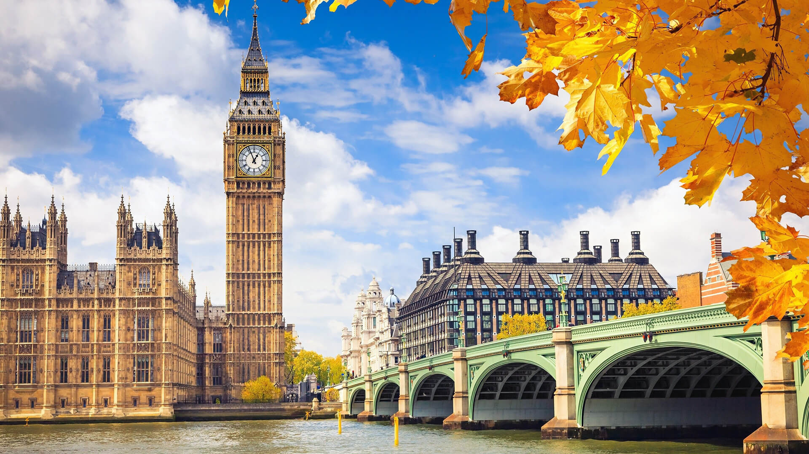

-

-

- 
Sophisticated England
Best Tours and Trips in 2019
Highlights
Start in London! With the discovery tour London Explorer, you have a 4 day tour package taking you through London, England and 3 other destinations in England. London Explorer Winter includes accommodation as well as an expert guide, meals, transport and more.
From London, we’ll set off on our adventure. Our first stop is the tiny market city of Wells, known for its Gothic cathedral and peaceful Vicars’ Close. From Wells, our path will take us from the quaint country lanes of Somerset to the heather and gorse-clad tors of Dartmoor National Park. Tonight, we’ll enjoy a welcome dinner together.
Today we’ll leave Dartmoor for Cornwall’s northern coast – starting with a stroll around Port Isaac, the fishing village made famous by the Doc Martin television series. Next, we’ll enjoy a leisurely lunch at The Seafood Restaurant – Rick Stein’s flagship restaurant in Padstow. Here, you can take your pick from a menu of fresh-off-the-boat Cornish seafood and international favourites. Afterwards, it's time to take it easy as we travel further west to Falmouth.
After a hearty breakfast we’ll set off for St Michael’s Mount, a tidal island just off the coast of Penzance. Here, we’ll explore the village and the medieval castle and gardens, which are brimming with treasures and stories from the past. Next, we’ll visit St Ives, one of England’s prettiest towns, before returning to Falmouth.
oday we’ll make our way along the south Cornish coast with a stop at the fishing village of Polperro before leaving the countryside behind us. After visiting magnificent Buckfast Abbey in south Devon, our road will take us to Dorset, stopping at Lyme Regis – where you can walk in the footsteps of Jane Austen’s heroines. We’ll take in the sweeping views of the Jurassic Coast before we end in Hawkchurch and enjoy a farewell dinner together.
There’s a treat for the green-fingered today: we’re off to explore Tregothnan, Cornwall’s largest estate and the historic seat of the Boscawen family. A member of the gardening team will give us a private tour of the grounds and the tea plantation, where we’ll learn all about the only tea grown in England. You’ll even get the chance to sample some local produce. Afterwards, we’ll make our way to Fowey, a historic town that hugs the steep banks of the Fowey Estuary, before settling into our hotel and enjoying dinner.
Our last scenic jaunt takes us along the Old Roman Road to Salisbury, a city set in a landscape of grassy plains and rolling downs. From a town steeped in history to a modern metropolis, we’ll then head back to London, where our tour ends.